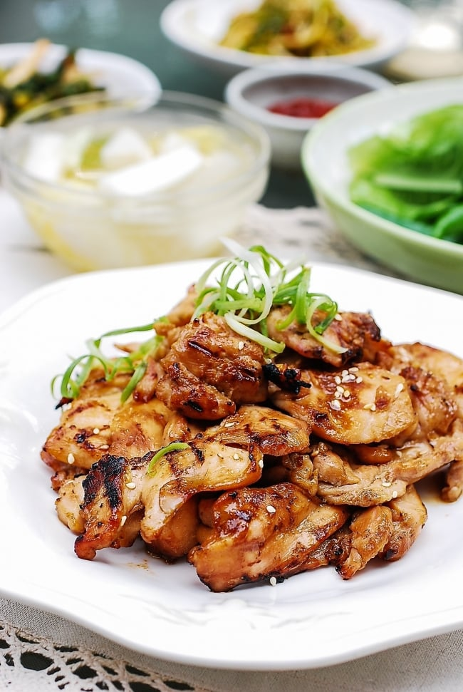

Skillet Chicken Bulgogi

Description
Anothe possible banger that I haven't tried. Big fan of single
skillet/pot recipes, so this could be a certified grade A banger.
You know the drill.
Ingredients
- Quarter cup chopped onion
- 5 Tablespoons soy sauce
- 2 and a half tablespoons brown sugar
- 2 tablespoons minced garlic
- 2 tablespoons sesame oil
- 1 tablespoon sesame seeds
- Half teaspoon cayenne
- Salt and pepper to taste
-
1 pound skinless, boneless chicken breasts, cut into thin strips
Steps
-
Whisk onion, soy sauce, brown sugar, garlic, sesame oil,
sesame seeds, cayenne pepper, salt, and black pepper together
in a bowl until marinade is smooth.
-
Cook and stir chicken and marinade together in a large skillet
over medium-high heat until chicken is cooked through, about 15
minutes.
Home